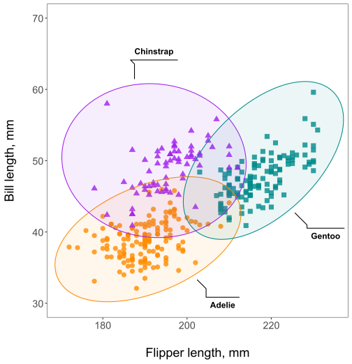
Decision trees and random forests
MELODEM data workshop
Overview
Decision trees
Growing trees
Leaf nodes
Random Forests
Out-of-bag predictions
Variable importance

Decision trees
Growing decision trees
Decision trees are grown by recursively splitting a set of training data.
Gini impurity
For classification, “Gini impurity” measures split quality:
\[G = 1 - \sum_{i = 1}^{K} P(i)^2\]
\(K\) is no. of classes, \(P(i)\) is the probability of class \(i\).
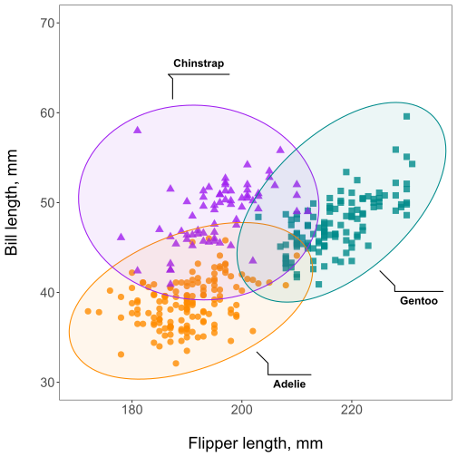
First split: right node
Consider splitting at flipper length of 206.5: Right node:
gini_right <- penguins %>%
filter(flipper_length_mm>=206.5) %>%
count(species) %>%
mutate(p = n / sum(n)) %>%
summarize(gini = 1 - sum(p^2)) %>%
pull(gini)
gini_right[1] 0.107008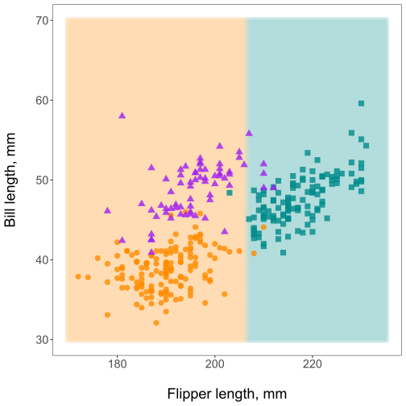
First split: left node
Consider splitting at flipper length of 206.5: Left node:
gini_left <- penguins %>%
filter(flipper_length_mm<206.5) %>%
count(species) %>%
mutate(p = n / sum(n)) %>%
summarize(gini = 1 - sum(p^2)) %>%
pull(gini)
gini_left[1] 0.4289479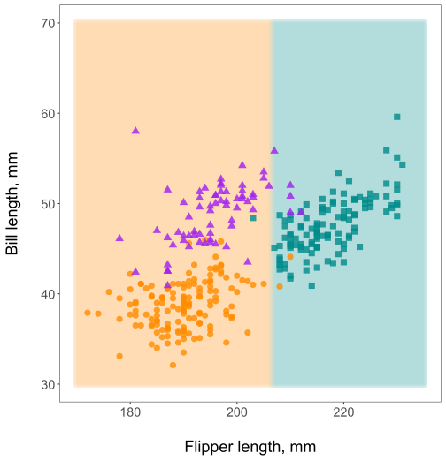
First split: total impurity
Consider splitting at flipper length of 206.5: Impurity:
split_var <- penguins %>%
pull(flipper_length_mm)
n_tot <- length(split_var)
n_right <- sum(split_var >= 206.5)
n_left <- sum(split_var < 206.5)
gini_right * (n_right / n_tot) +
gini_left * (n_left / n_tot)[1] 0.3080996Your turn
Was this the best possible split? Let’s find out.
Open
classwork/02-trees_and_forests.qmdCalculate the total impurity of splitting along bill length of 45 mm.
Reminder: Red sticky note if you’d like help, green sticky note when you are finished.
Hint: the answer is 0.492340868530637
. . .
Keep growing?
Now we have two potential datasets, or nodes in the tree, that we can split.
Do we keep going or stop?
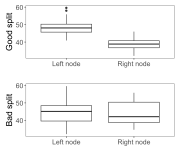
Stopping conditions
We may stop tree growth if the node has:
Obs <
min_obsCases <
min_casesImpurity <
min_impurityDepth =
max_depth
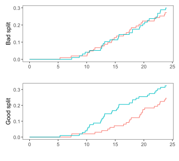
Your turn
Suppose
min_obs= 10min_cases= 2min_impurity= 0.2max_depth= 3
Which node(s) can we split?
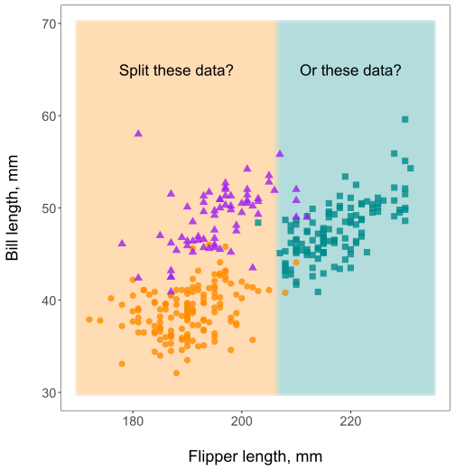
Split the left node
The left node can be split.
The right node cannot, since impurity on the right is <
min_impurity
Finished growing
The left node can be split.
After splitting the left node, all nodes have impurity <
min_impurity.If no more nodes to grow, convert partitioned sets into leaf nodes
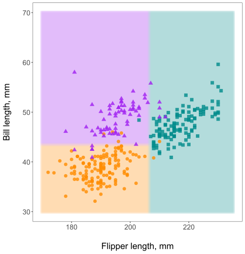
Leaves?
What is a leaf node?
A leaf node is a terminal node in the tree.
Predictions for new data are stored in leaf nodes.
mutate(
penguins,
node = case_when(
flipper_length_mm >= 206.5 ~ 'leaf_1',
bill_length_mm >= 43.35 ~ 'leaf_2',
TRUE ~ 'leaf_3'
)
) %>%
group_by(node) %>% count(species) %>%
mutate(n = n / sum(n)) %>%
pivot_wider(values_from = n, names_from = species,
values_fill = 0)# A tibble: 3 × 4
# Groups: node [3]
node Adelie Chinstrap Gentoo
<chr> <dbl> <dbl> <dbl>
1 leaf_1 0.016 0.04 0.944
2 leaf_2 0.0635 0.921 0.0159
3 leaf_3 0.966 0.0345 0 Your turn
Fit your own decision tree to the penguins data.
Open
classwork/02-trees_and_forests.qmdComplete Exercise 2
. . .
From partition to flowchart
The same partitions, visualized as a binary tree.
As a reminder, here is our ‘hand-made’ leaf data
| Adelie | Chinstrap | Gentoo | |
|---|---|---|---|
| leaf_1 | 0.02 | 0.04 | 0.94 |
| leaf_2 | 0.06 | 0.92 | 0.02 |
| leaf_3 | 0.97 | 0.03 | 0.00 |
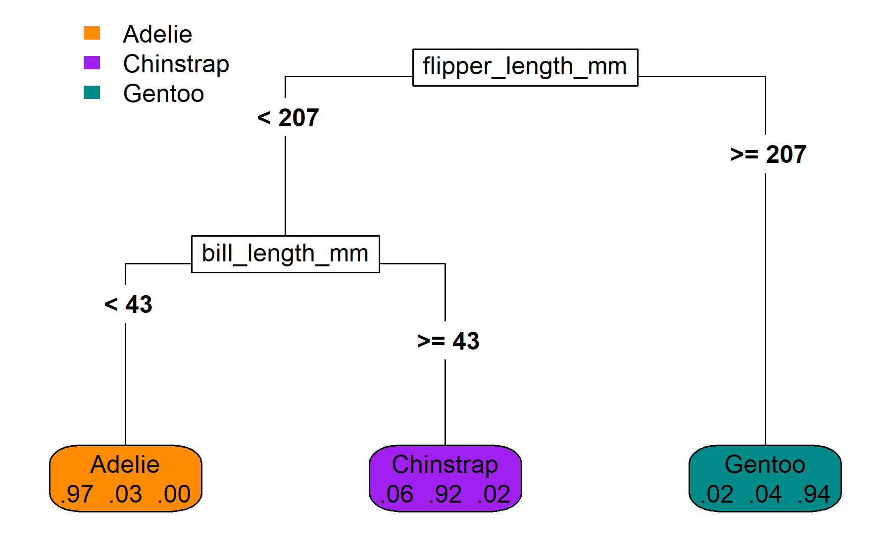
Planting seeds for causal trees
Suppose we have outcome \(Y\) and treatment \(W\in\{0, 1\}\).
\[\text{Define }\tau = E[Y|W=1] - E[Y|W=0],\]
If \(\tau\) can be estimated conditional on a person’s characteristics, then a decision tree could be grown using \(\hat\tau_1 \mid x_1, \ldots, \hat\tau_n \mid x_n\) as an outcome. That tree could predict who benefits from treatment and explain why.
But how do we get \(\hat\tau_i \mid x_i\)? More on this later…
Random forests
Expert of committee?
If we have to make a yes/no decision, who should make it?
1 expert who is right 75% of the time
Majority rule by 5000 independent “weak experts”.
- Note: each weak expert is right 51% of the time.
Answer is weak experts!
Why committee?
If we have to make a yes/no decision, who should make it?
1 expert who is right 75% of the time
Majority rule by 5000 independent “weak experts”.
- Note: each weak expert is right 51% of the time.
Answer is weak experts!
Why? Weak expert majority is right ~92% of the time
# probability that >2500 weak experts are right
# = 1 - probability that <=2500 are right
1 - pbinom(q = 2500, size = 5000, prob = 0.51)[1] 0.9192858Random forest recipe
The weak expert approach for decision trees:
Grow each tree with a random subset of the training data.
- “In-bag” means in the random subset
- “Out-of-bag” means not in the subset
Evaluate a random subset of predictors when splitting data.
These random elements help make the trees more independent while keeping their prediction accuracy better than random guesses.
A single traditional tree is fine
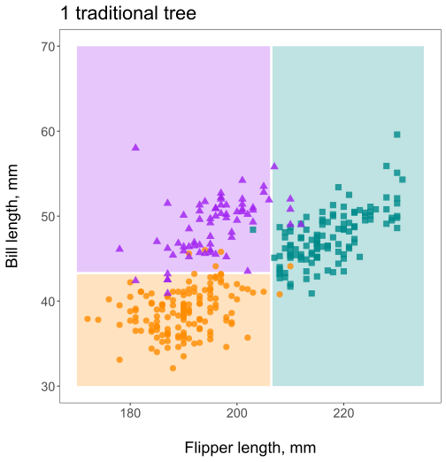
A single randomized tree struggles
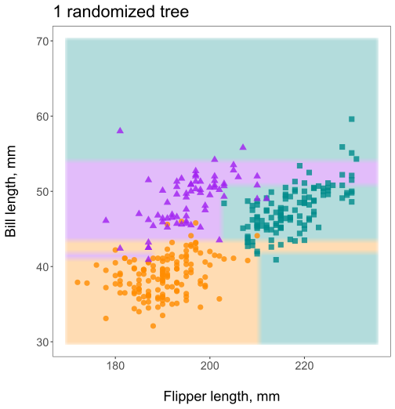
Five randomized trees do okay
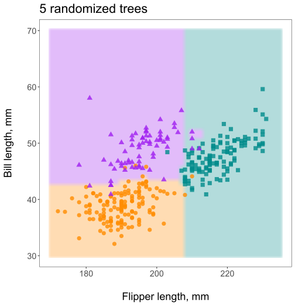
100 randomized trees do great
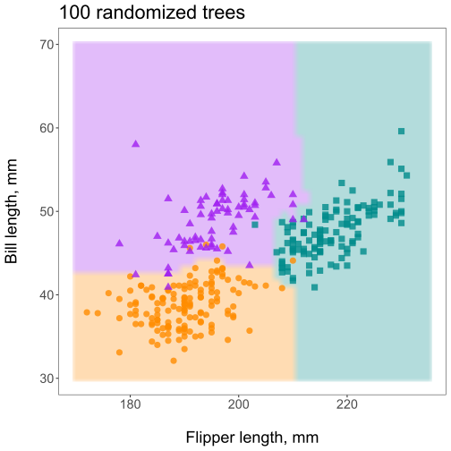
500 randomized trees - no overfitting!
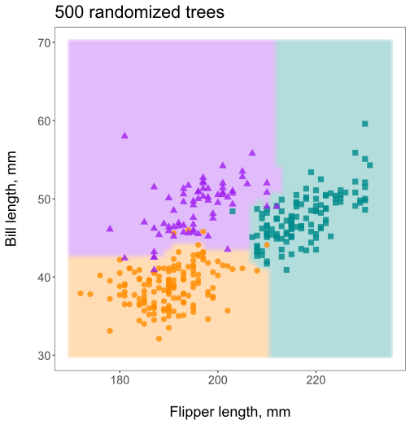
Random forest predictions
To get a prediction from the random forest,
predict the outcome with each tree
take the majority vote
In situations where trees predictions are continuous and you can’t take a majority vote, e.g., predicted 10-year risk for dementia, just take the mean of the tree’s predictions.
How to get out-of-bag predictions
Grow tree #1

Store its predictions and denominators
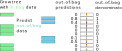
Now do tree #2
Accumulate predictions and denominator
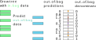
Out-of-bag predictions
Final out-of-bag predictions:
\[\frac{\text{out-of-bag predictions}}{\text{out-of-bag denominator}}\]
With conventional bootstrap sampling, each observation has about a 36.8% chance of being out-of-bag for each tree.
Out-of-bag predictions give an unbiased view of the forest’s prediction on new data
This allows for variable importance estimates and (we’ll see this later) valid inference in causal forests.
Variable importance
First compute out-of-bag prediction accuracy.
In this case, classification accuracy is 96%
Variable importance
Next, permute the values of a given variable
See how one value of flipper length is permuted in the figure?

Variable importance
Next, permute the values of a given variable
Now they are all permuted, and out-of-bag classification accuracy is now 61%
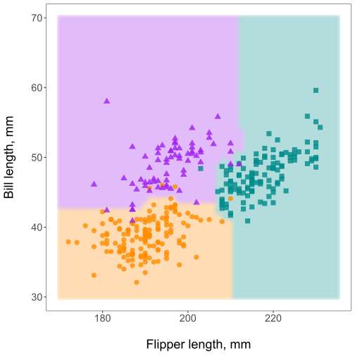
Variable importance
Rinse and repeat for all variables.
For bill length, out-of-bag classification accuracy is reduced to 63%
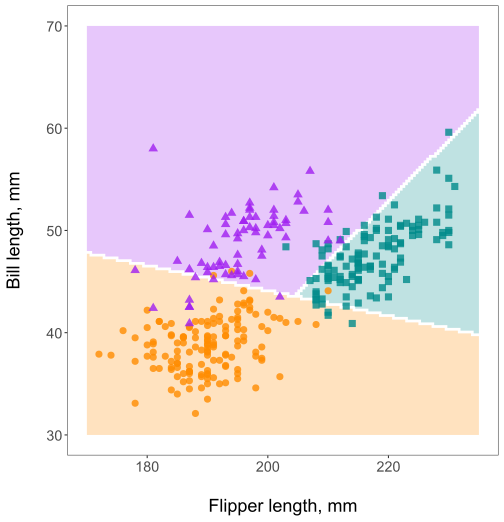
Variable importance
Once all variables have been through this process:
\[\text{Variable importance} = \text{initial accuracy} - \text{permuted accuracy}\]
Flipper length: 0.96 - 0.61 = 0.35
Bill length: 0.96 - 0.63 = 0.33
\(\Rightarrow\) flippers more important than bills for species prediction.